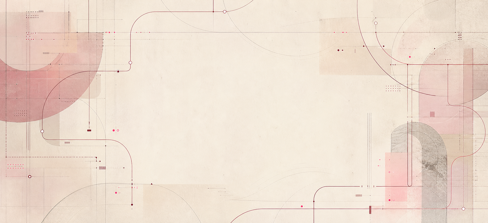

ZC_STUDIOS // CULTURAL_STRATEGY_OS
How I turn founder instinct into brand direction.
ZC Studios is my independent cultural strategy practice. Explore the AI-assisted workflow I use to structure research, positioning and creative direction, with strategic decisions under my control.
> 13_AGENTS_LOADED
> MARGAUX_GATES_ACTIVE
> CAIUS_BENCHMARK_BANK_CONNECTED
> ZAIRA_FINAL_DECISION_LAYER_ONLINE
ZCS
STRATEGY_OS
Click any node to inspect the operating layer.
WHAT_ZCS_IS
ZC Studios builds the logic beneath founder-led brands.
The workflow connects research to positioning, voice, visual direction, the customer journey and content. Each stage is designed to make the next brand decision clearer.
A clear position should guide what a brand says, makes and does.
Select a logic pillar.
FOUNDER_CONTROLLED_AI_STUDIO_MODEL
AI supports the work. I make the decisions.
I built thirteen specialist AI skills to support a defined sequence of tasks. The interactive map explains their roles. Research quality, interpretation and final recommendations remain my responsibility.
FINAL_DECISION_LAYER
ZAIRA_CHRISTA
Creative Director / Lead Strategist / Final Decision-Maker
INTERACTIVE_AGENT_MAP
Thirteen agents, one controlled system.
RUN_THE_SEQUENCE
Every phase produces the next phase’s input.
Between every stage sits a Margaux gate: review, pressure-test, repair, then handoff.
MARGAUX_QC_LAYER
Nothing becomes the next agent’s input without a pass.
If it could apply to any brand, it is not ready.
QC_SCORE
0/8
Click gates to simulate a pass check.
ELIAN_DIAGNOSTIC_LAYER
The step from research to interpretation.
Elian answers the question: what is this brand, really, beneath the surface?
Select a diagnostic dimension.
No downstream agent may begin work on a brand that has not been calibrated.
CAIUS_BENCHMARK_BANK
Caius studies excellence without copying it.
He extracts transferable principles from high-performing brands and blocks surface imitation.
SURFACE_FEATURE
“Byredo uses matte black packaging.”
TRANSFERABLE_PRINCIPLE
Click translate to reveal the usable logic.
The principle travels. The brand does not.
ZCS_BRAND_MATURITY_FRAMEWORK
11 levels. 5 modes. One diagnostic starting point.
Explore how the framework changes the recommended scope of work as a brand develops.
WHAT_A_CLIENT_RECEIVES
Strategy becomes usable infrastructure.
INVESTOR_CLIENT_SUMMARY
A locked workflow for turning instinct into brand infrastructure.
This workflow shows how I organise a strategy project: establish the evidence, clarify the position and connect it to creative decisions. Quality checks are designed to distinguish supported findings from assumptions that still need testing.
ZC Studios is a thirteen-agent brand strategy system, built and operated by Zaira Christa, that takes a founder-led brand from raw instinct to a fully structured strategic world.